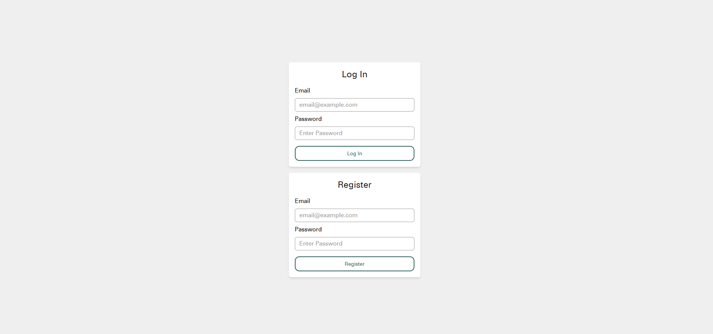

Standalone Server - Raspberry Pi¶
Initial Setup¶
A standalone Server can be quickly created using a pre-made Raspberry Pi image. (Contact PBSI for access to a pre built image)
This Image can be flashed to a 32GB SD card using the Raspberry Pi imager. The image has been tested with a Raspberry Pi 5 (4GB RAM) and a Raspberry Pi 4 (4GB of RAM).
The Pi is configured with a desktop environment but should be able to be used primarily remotely without a display, mouse or keyboard.
After starting up the PI a new WiFi network will appear called "Aether-Local". Connecting to this network will give you access to Aether. If the Pi is also connected to the internet via Ethernet then the wireless Aether-Local network will also provide internet access.
Once a device is connected to the Aether-Local network it can access the Aether interface by opening a web browser (preferably Chrome) and going to: http://aether:3022/ this should open the Aether Login page:

An administrator user will be configured for you and credentials provided with the pre-built image.
Once logged in you can navigate to the Dashboard Panel to see connected Node Controllers.
Adding Node Controllers.¶
Aether's Node Controllers are the distributed devices co-ordinated by the Aether interface. Custom Node Controller PCB's developed by PBSI can be used, or an Adafruit ESP32 Huzzah Feather can be configured as a Node Controller.
Warning
A standalone server will have a maximum device limit of between 8-12 connected devices, due to the limitations of the Raspberry Pi's Wifi card. See Expanding the Number of Connected Devices below for how to expand this setup beyond this limit.
Troubleshooting the Standalone Server:¶
On the Aether-Local network you can access a terminal on the PI via SSH. Open a command prompt and enter
ssh aether@aether the password for SSH to the Pi will be provided with the Image.
To access the Aether Server logs use the command
pm2 logs server
To stop and start the server use:
pm2 stop server and pm2 start server
if the server was working well but has crashed and won't restart its possible that the database has been corrupted. You can restore to the last functional state by navigating to the server directory with: cd testbed-v4 and running: git restore .
Expanding the Number of Connected Devices¶
To expand the number of possible connected devices, a Router running in Access Point Mode, can be used to host the Aether-Local Wifi network:
-
Follow your Router manufacturer's instructions to setup Access Point Mode, and set the router's SSID to
Aether-Localits Security toWPA2(Ensure the WPA2 Password matches the password defined in the firmware'saether_config.hfile) and its IP Address to172.23.4.2. -
Connect the WAN port of your router to the Ethernet Port on the Raspberry Pi
-
Setup the Raspberry Pi to use its Ethernet connection as a bridge via the network manager using the following command
sudo nmcli connection add type ethernet con-name PiBridge ifname eth0 ipv4.method shared -
Setup the IP Address of the ethernet bridge
sudo nmcli connection modify PiBridge ipv4.addresses 172.23.4.1/24 -
Setup the DHCP range of the bridge connection
sudo nmcli connection modify PiBridge ipv4.shared-dhcp-range "172.23.4.10,172.23.4.254
Note
Make sure you disable the Wifi Access point that is running on the Pi. You can also use the Pi's wifi to connect to another internet enabled Wifi network to allow for remote access to the the Raspberry Pi if desired.